아이의 손톱은 성인보다 얇고 여려요. 기존 매니큐어는 두껍게 코팅되는 방식이라 아이는 금방 갑갑함을 느끼고, 막상 지우려 하면 독한 아세톤 리무버가 필요해 부모도 아이도 곤란해집니다.
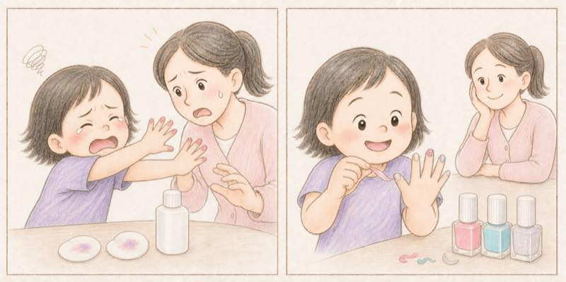
물 베이스라 톡 쏘는 냄새가 없고, 스티커처럼 쓱 떼어내는 방식이라 독한 리무버도 필요 없습니다. 바르는 것부터 떼는 것까지, 아이 혼자 끝까지 해볼 수 있습니다.
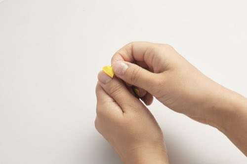
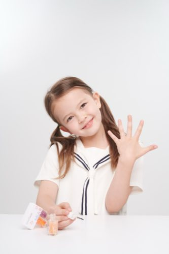
손톱에 바르는 것이니, 무엇이 들어있고 무엇이 빠졌는지부터 정확히 알려드립니다.
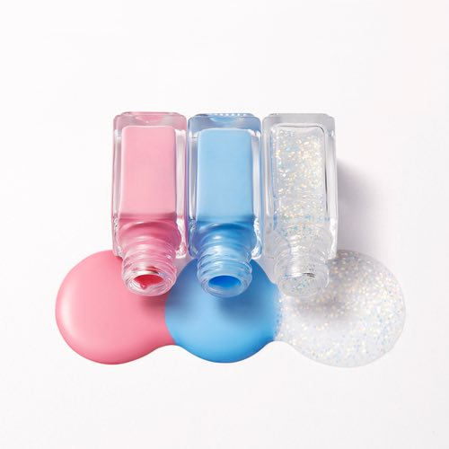
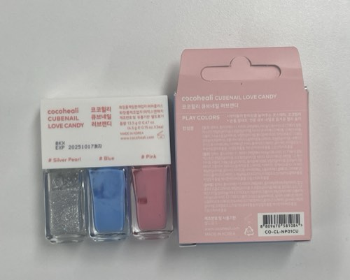
④에서 시작한, 성분 걱정 없는 컬러가 이제 두 가지 방법으로 이어집니다.
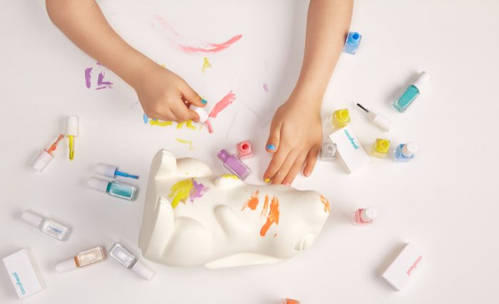
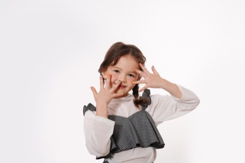
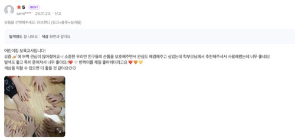
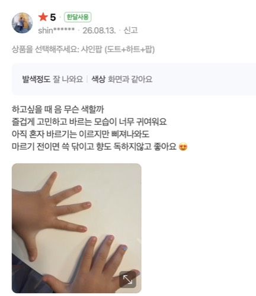
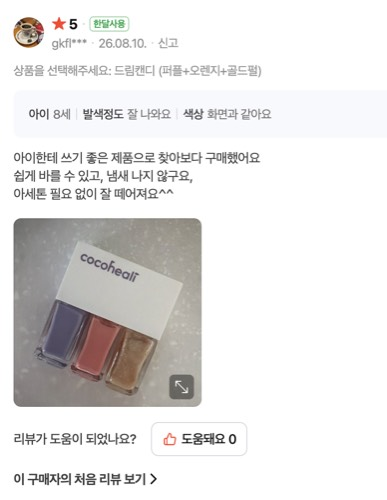
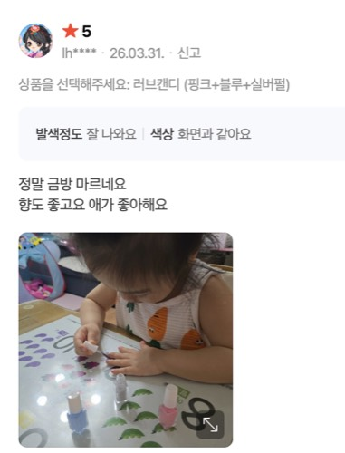
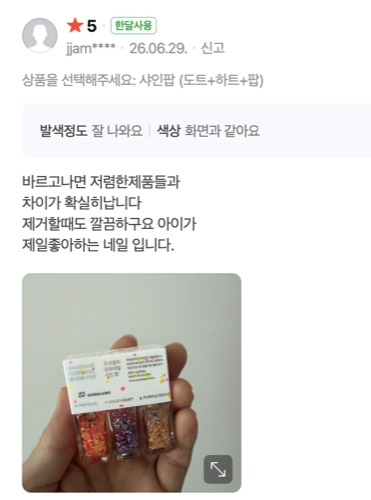
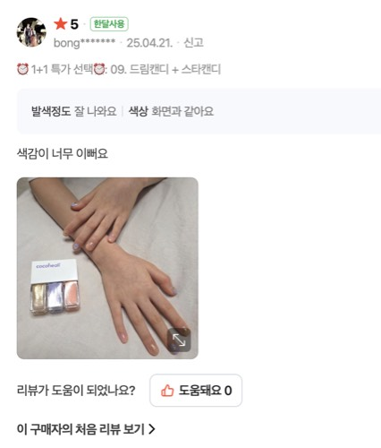
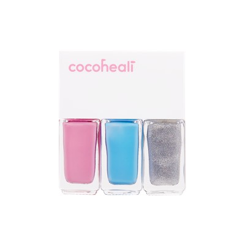
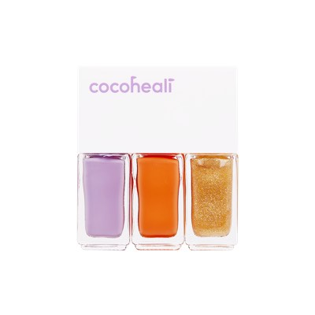
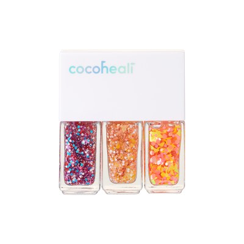